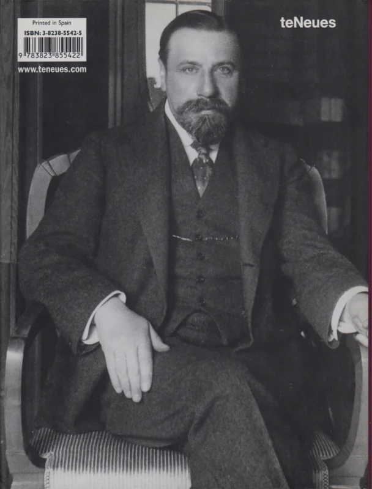
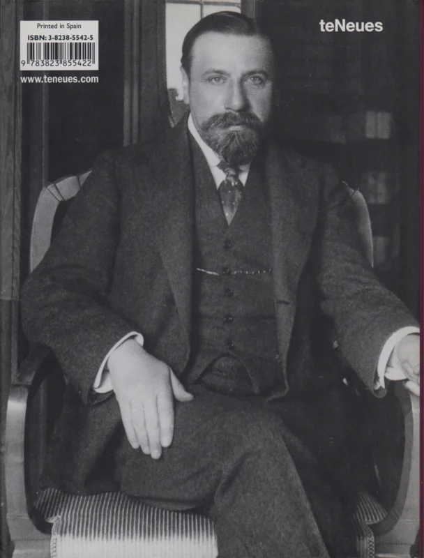
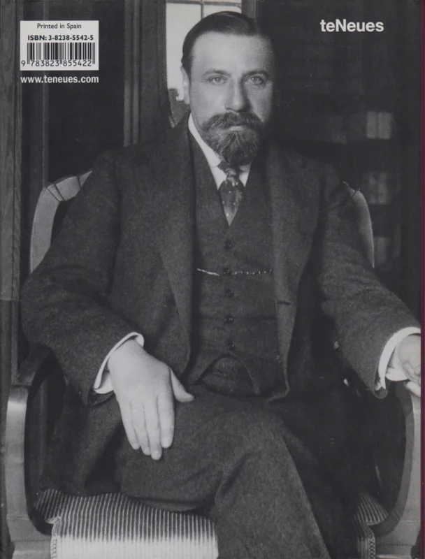
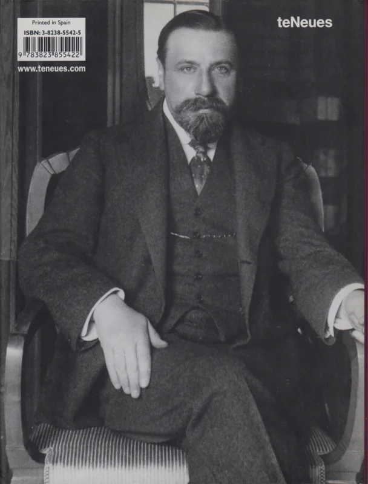

Autor: Victor Horta
Data: 1893-1894
Técnica: Ferro forjado e vidro
Dimensões:
Escada central do edifício (dimensões variáveis conforme o espaço)
Localização: Hotel Tassel, Bruxelas,
Bélgica
Victor Horta, um dos principais arquitetos do movimento Art Nouveau, é conhecido por suas inovações na integração de elementos decorativos e estruturais. A escada projetada por Horta é um exemplo brilhante dessa abordagem. Os corrimãos e as grades são elaborados em ferro forjado, com formas sinuosas que imitam a fluidez das linhas naturais. As curvas são frequentemente inspiradas em formas de plantas e flores, e o uso de vidro colorido e mosaicos adiciona um elemento de brilho e cor ao design. A estrutura da escada é tão estética quanto funcional, refletindo o desejo de Horta de criar ambientes que fossem simultaneamente belos e utilitários. A escada de Horta não é apenas uma peça funcional, mas também uma expressão artística que demonstra a filosofia do Art Nouveau: a fusão da arte e da arquitetura. O estilo enfatiza a harmonia entre o design e a funcionalidade, criando um espaço que é tanto agradável ao olhar quanto prático no uso diário. Horta busca criar um ambiente onde a beleza e a utilidade estejam inseparavelmente conectadas, e a escada exemplifica essa integração ao transformar um elemento arquitetônico cotidiano em uma obra de arte